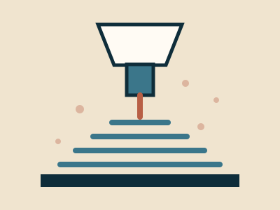
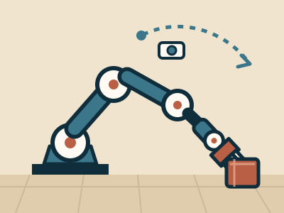
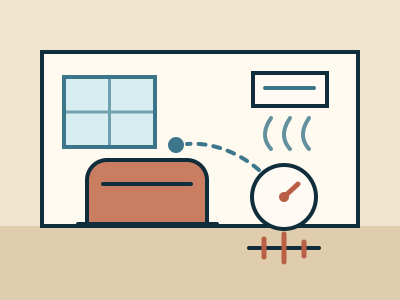
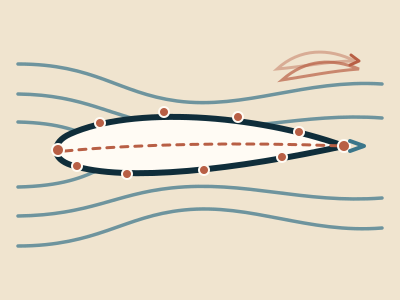

Research
Engineering intelligence—whether embodied or not—must remain grounded in physical reality. Our research advances intelligent engineering systems, particularly in additive manufacturing, generative design, control, and robotics. Across these fields, we seek to bridge the gap between algorithmic intelligence and engineering practice, where data are scarce, operations are safety-critical, and components degrade over time. To address these challenges, we generate simulated data and develop approaches based on transfer learning, physics-informed neural networks, and adaptive control policies.

Additive Manufacturing
Our research investigates the relationships among process parameters, microstructure, and material properties, leveraging these relationships to develop process-optimization models and adaptive control policies.
Current Research Projects:
- A Computational Process-Structure-Property Dataset of Wire Arc Additive Manufacturing (ongoing).
- A Stacked Ensemble Learning Framework for Surface Roughness Prediction in Additively Manufactured Parts (Completed).
- A Cross-Machine Transfer Learning Framework for Mechanical Property Prediction in Laser Powder Bed Fusion (Completed).
- Explainable Machine Learning for Melt-Pool Geometry Prediction and Defect-Risk Assessment in SS316L Directed Energy Deposition (Completed).
- Defect-Constrained Process Parameter Optimization for Target Mechanical Properties in Additive Manufacturing (Completed).

Physical AI
Our research in Physical AI focuses on developing embodied intelligent systems that can perceive their surroundings, reason about physical interactions, and adapt their behavior in real time.
Current Research Projects:
- Adaptive Vision–Language–Action Policy for Robotic Manipulation Under Joint Malfunction


Generative Design
Our current research focuses on developing conditional generative models that produce optimized airfoil geometries for target flow regimes while satisfying specified design constraints.
Current Research Projects:
- Conditional Generative Inverse Design of Airfoils in the Incompressible Flow Regime Paper